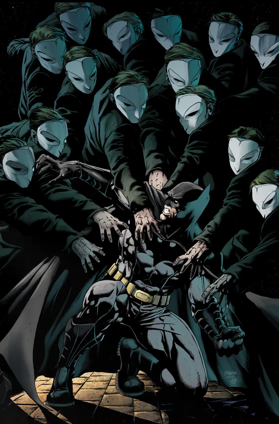

The Court of Owls is an ancient conspiracy that has controlled Gotham City for centuries.
They are a violent cabal who use architecture and murder to wield political influence throughout history. Their legend is told only through whispers and a nursery rhyme that bears their name. To carry out their interests, they employ a breed of highly-trained assassins known as Talons. The leaders of the organization appear to be human and wear owl masks on their faces. The rest of the court, on the other hand, are mutated and appear to actually be human/owl hybrids. Their owl-like distorted faces, long claws, and their eating style prove this.
The Court of Owls takes notice when billionaire philanthropist Bruce Wayne announces plans to rebuild and reshape Gotham City for the future.[3] He is sentenced to death, and their assassin, the Talon, attempts to murder him during a meeting with politician Lincoln March. They struggle at the top of Wayne Tower and the killer survives a fall from the top.[4] Batman begins to investigate, and he discovers that their society has secret headquarters throughout hidden rooms in every building established by the Alan Wayne Trust. They attempt to kill him again by blowing up their most recent base.[5] Bruce recounts that as a child he believed them responsible for the death of his parents, and personally investigated the conspiracy before determining that there was no evidence.